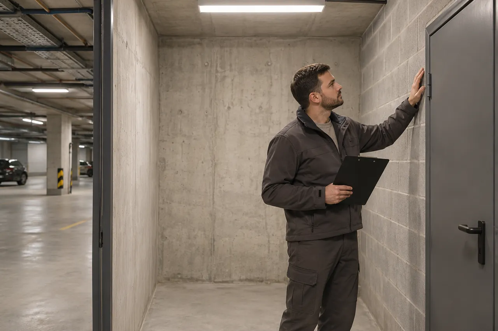
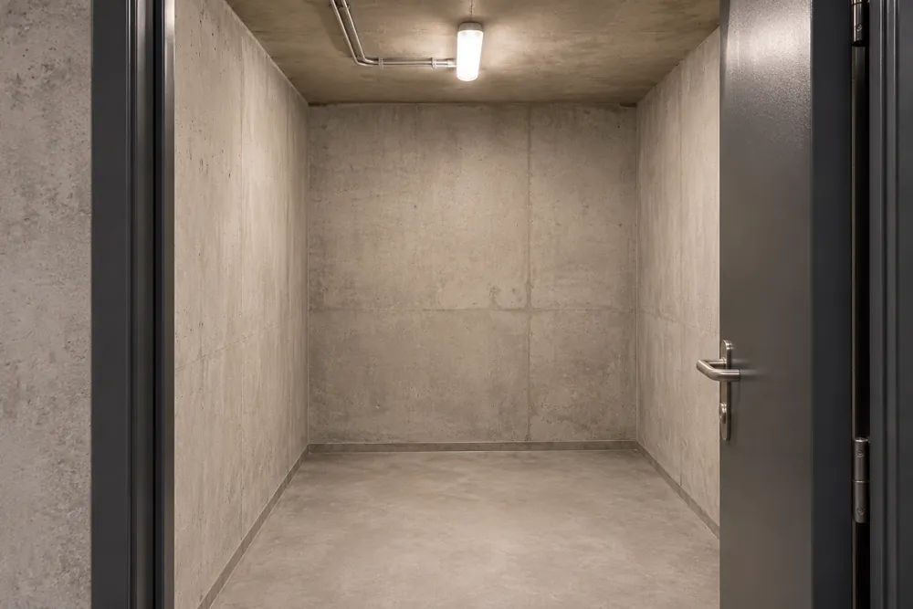
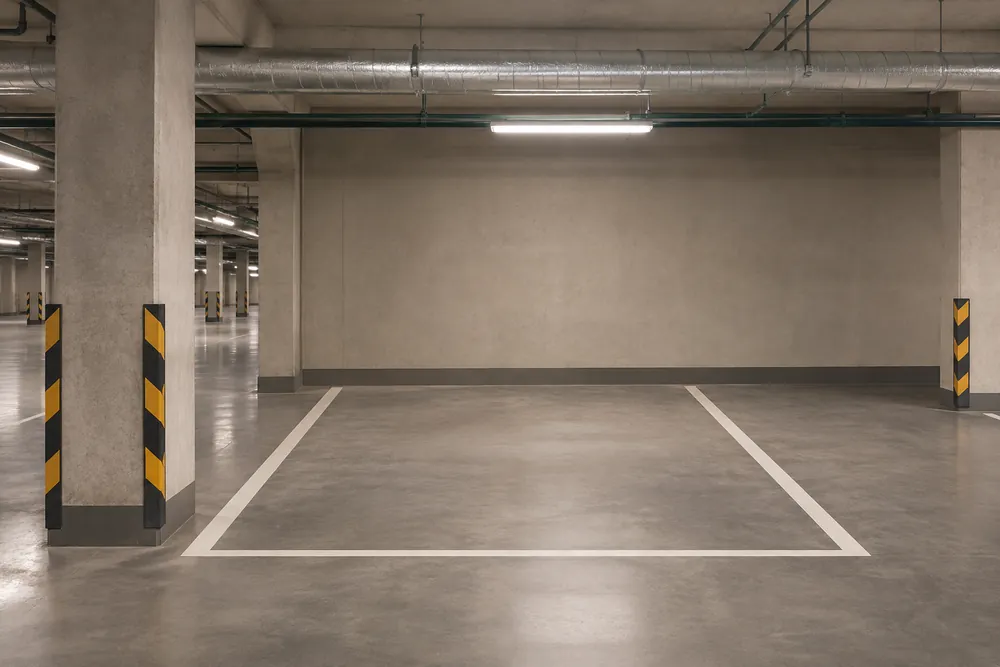

Проверка технического состояния
Специалист проводит осмотр выбранного объекта до подписания акта приёма-передачи.
Проверим техническое состояние объекта перед подписанием акта приёма-передачи, зафиксируем обнаруженные дефекты и поможем корректно оформить замечания.

Специалист проводит осмотр выбранного объекта до подписания акта приёма-передачи.
Обнаруженные недостатки и нарушения фиксируются в рамках осмотра.
Специалист помогает корректно оформить замечания по результатам проверки.
Составление акта осмотра входит в услугу.


При совместной приёмке квартиры — 3 000 ₽. При отдельном выезде могут взиматься транспортные расходы.
Все услуги и ценыпри совместной приёмке квартиры
Оставьте заявку, чтобы согласовать осмотр до подписания акта приёма-передачи.